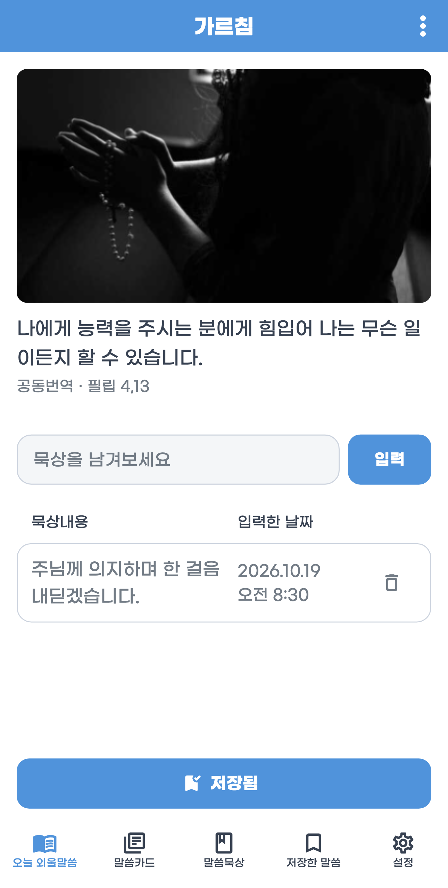
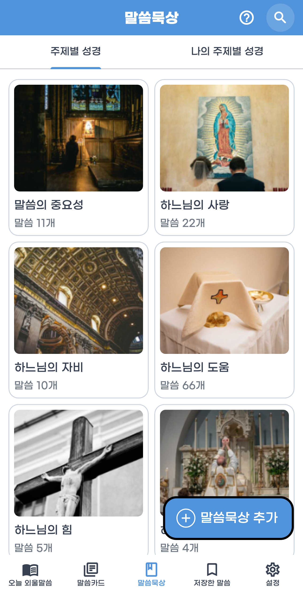

오늘 만날 말씀
오늘의 말씀과 주제별 구절을 살펴보세요. 마음에 남는 말씀을 저장하고, 나만의 주제와 구절도 추가할 수 있습니다.
한 구절을 천천히 되새기는 시간.
오늘 마음에 닿은 말씀을 외우고,
당신만의 묵상을 차곡차곡 기록해 보세요.
iOS & Android · 성경암송과 묵상


짧은 구절 하나가, 하루의 깊이가 되도록.
말씀을 만나고 · 마음에 새기고 · 기록으로 남기세요부담 없이 한 구절부터 시작하세요.
읽기에서 암송으로, 암송에서 깊은 묵상으로
자연스럽게 이어집니다.
오늘의 말씀과 주제별 구절을 살펴보세요. 마음에 남는 말씀을 저장하고, 나만의 주제와 구절도 추가할 수 있습니다.
말씀 카드로 구절을 만나고, 반복해서 되새기세요. 말씀 알림과 화면 설정으로 일상에 맞는 암송 시간을 만들어 보세요.
말씀을 읽으며 떠오른 생각과 기도를 적어 보세요. 기록을 검색하며, 시간이 지나 다시 만나는 깨달음을 발견하세요.
한 구절의 만남부터 묵상의 기록까지.
실제 앱 화면으로 살펴보세요.

현재 개발 중인 Flutter 앱의 실제 Android 화면입니다. 운영체제와 화면 설정에 따라 표시가 다를 수 있습니다.
말씀, 묵상, 주제, 사진 배정과 앱 설정을
사용자의 Google Drive에 백업할 수 있습니다.
같은 Google 계정으로 Android와 iOS 사이에서도
기록을 복원하세요.
백업과 복원은 사용자가 선택할 때 진행됩니다.
Google 로그인과 파일 접근 권한은 해당 기능 이용 시 필요합니다.
Google Drive
나의 계정으로 이어지는 말씀과 기록
iPhone과 Android에서 사용할 수 있습니다. 각 스토어에서 지원하는 운영체제와 기기 정보를 확인해 주세요.
말씀을 저장하고, 사용자 지정 주제와 구절을 추가할 수 있습니다. 묵상 작성과 검색 기능도 이용할 수 있습니다.
Google 로그인과 파일 접근 권한은 Google Drive 백업·복원 기능을 선택할 때 필요합니다. 자세한 데이터 처리 내용은 개인정보처리방침에서 확인할 수 있습니다.
당신의 일상에 조용히 스며드는 말씀과 묵상.